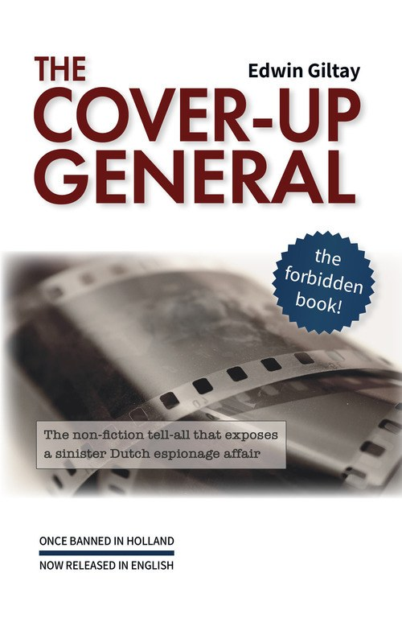
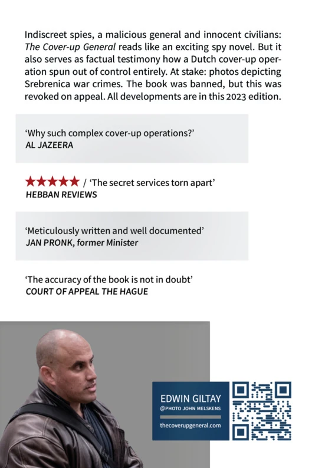

Le seul livre néerlandais à avoir surmonté une interdiction totale de publication :
Désormais téléchargeable gratuitement dans le monde entier
Des espions indiscrets, un général malveillant et des civils innocents : Le Général de dissimulation se lit comme un palpitant roman d’espionnage. Mais il constitue aussi un témoignage factuel de la manière dont une opération néerlandaise de dissimulation a totalement déraillé. En jeu : des photos montrant des crimes de guerre à Srebrenica. Le livre a été interdit, mais cette interdiction a été annulée en appel. Tous ces développements sont exposés dans cette édition anglaise.
Téléchargez-la et partagez-la librement, en modeste hommage au combat contre la censure.


The Cover-up General
par Edwin Giltay
Révision du texte anglais : Michael Wynne
La Haye, Pays-Bas : 2025
292 pages, avec illustrations en couleur
Titre néerlandais : De doofpotgeneraal
Titre français : Le Général de dissimulation
Pourquoi cette édition internationale est importante
Cette affaire n’est pas un chapitre clos. Relayée par des médias du monde entier, elle touche au cœur d’une démocratie qui fonctionne :
•
Pour l’histoire :
Le livre a servi de preuve dans le procès intenté par les Mères de Srebrenica contre l’État néerlandais : leurs avocats s’en sont prévalus pour soutenir que la fameuse pellicule, qui montrait des crimes de guerre, n’avait jamais été ratée et que les photos sont retenues depuis lors. La Cour suprême a jugé que l’État néerlandais est partiellement responsable de la mort d’environ 350 hommes.
•
Pour la liberté de la presse :
La Cour d’appel a explicitement rejeté les doutes sur la méticulosité de l’auteur. Ainsi, Le Général de dissimulation a créé un précédent rare à l’échelle mondiale : une interdiction totale du livre, annulée en appel.
•
Pour la responsabilité de l’État :
L’État tient des discours contradictoires : la Justice a confirmé que le livre n’est « en aucune manière » une fausse information, la Défense l’a rejeté comme un livre où « les faits et la fiction se mêlent en effet ». La commission de la Défense du Parlement a exigé à l’unanimité une réponse de fond. Elle se fait toujours attendre.
Ces 100 citations vérifiées mettent en lumière les abus d’une opération de renseignement où le secret se heurte à la transparence. Ces voix éclairent une lutte plus large pour que l’État rende des comptes et confrontent le ministère de la Défense à son rôle dans l’affaire, qui a culminé dans une victoire judiciaire contre une interdiction de livre et de parole
(voir le jugement de censure
ECLI:NL:RBDHA:2015:15050
et l’arrêt d’appel
ECLI:NL:GHDHA:2016:870). Cette affaire porte sur un aspect du dossier de Srebrenica : la fameuse pellicule.
Choisissez les citations clés ou toutes les citations. Filtrez aussi par intervenant, année ou pays de la source.
Psychiatrisation abusive
D’« inébranlable » à « complètement fou » : comment le ministère néerlandais de la Défense réduit au silence les lanceurs d’alerte.
« Forte personnalité »
— drs. P. van der Pol, psychologue du ministère de la Défense, rejetant Edwin Giltay lors d’un examen d’embauche parce que son caractère était jugé trop fort pour être brisé par des sergents instructeurs (1998), une appréciation douteuse pour le ministère, revue par la suite dans des documents officiels
— Frank de Grave, ministre de la Défense, au sujet d’Edwin Giltay après qu’il eut signalé des abus, dans une position officielle jamais rétractée et signée par son secrétaire général (1999), en contradiction directe avec l’appréciation antérieure d’une « forte personnalité »
« Toute nouvelle lettre de votre part sur le même sujet ne fera l’objet que d’un accusé de réception. »
— Reinier van Zutphen, Médiateur national, refuse de rétracter le rapport public du Médiateur de 1999 dans lequel la déclaration de folie de De Grave a été reprise sans contestation, malgré la production par Giltay de nombreux documents officiels réfutant les accusations
« La psychiatrisation abusive de ceux qui signalent des manquements est un phénomène récurrent. C’est une politique délibérée, et le ministre de la Défense ne fait rien pour y mettre fin. »
— Victor van Wulfen, pilote de chasse lui-même faussement déclaré fou par le ministère de la Défense
« Je n’ai pas renvoyé mon plus haut fonctionnaire. Je n’ai pas remplacé l’équipe dirigeante. C’est un dilemme terrible. Aujourd’hui encore, je ne suis pas certain d’avoir fait le bon choix. »
— Frank de Grave, ancien ministre de la Défense, revenant dans son autobiographie (2018) sur son secrétaire général, qui a signé en son nom la déclaration de folie de Giltay
« La Défense ne s’est jamais exprimée de la sorte au sujet de M. Giltay. »
— Ank Bijleveld, ministre de la Défense (2018), nie que la Défense ait jamais qualifié Giltay de « complètement fou », alors que cette caractérisation demeure aujourd’hui encore publiée comme position officielle du ministre dans le rapport 1999/507 du Médiateur
Le déni de la réalité par le ministère de la Défense : qu’est-ce qui relève du fait et qu’est-ce qui relève de la fiction ?
« Edwin Giltay aurait été licencié par [le câblo-opérateur et fournisseur d’accès] Casema au bout de trois jours, en raison d’un comportement irritant et inadapté. »
— Frank de Grave, ministre de la Défense, reprend dans sa position officielle (1999) une autre affirmation tirée uniquement de l’audition de Barbara Overduyn, officière du renseignement militaire ayant brièvement travaillé chez Casema
« Edwin Giltay a dûment accompli ses fonctions d’intérimaire du 8 juin au 23 juillet 1998. »
— Casema, attestation officielle (1999), en contradiction directe avec la position jamais retirée du ministre De Grave, telle que consignée dans le rapport 1999/507 du Médiateur national
« Edwin Giltay a travaillé pour nous comme télévendeur du 8 juin 1998 au 27 juillet 1998, à l’entière satisfaction du client. »
— L’agence d’intérim Randstad, recommandation (1999) sur le travail intérimaire de Giltay : Randstad était l’employeur jusqu’à la date de fin de contrat, ce qui rendait un licenciement par Casema juridiquement impossible, contredisant la position de De Grave
« [J’ai déclaré] que Giltay avait été licencié de Casema en raison d’un comportement militant inadapté. [Cela a] depuis été réfuté par écrit par Giltay, preuves à l’appui. »
— Barbara Overduyn reconnaît, après 17 ans, que Giltay a réfuté son affirmation de licenciement, preuves à l’appui (2016)
« Votre lettre ne contient aucun élément nouveau ni aucun fait sur la base duquel une correction devrait être apportée ou des excuses vous être présentées. »
— Jeanine Hennis-Plasschaert, ministre de la Défense (2017), refuse de corriger sa position officielle et continue de formuler des affirmations qui ont été réfutées, même après les aveux de son propre témoin clé Barbara Overduyn
« Dans le livre, les faits et la fiction se mêlent en effet. »
— Ank Bijleveld, ministre de la Défense (2018), continue d’ignorer les aveux d’Overduyn, refuse de répondre sur le fond et accuse publiquement Giltay de déformer les faits
La pellicule « ratée » de Srebrenica : perdue dans un écheveau d’intrigues et de conflits internes.
« J’ai eu le privilège de lire le manuscrit de Giltay, Le Général de dissimulation, et il m’a fait dresser les cheveux sur la tête. “Cela ne sera pas apprécié”, ai-je commenté, ajoutant : “Méfiez-vous des représailles !” Je crains que l’on n’ait gravement menti à haut niveau à l’époque. »
« Dans Le Général de dissimulation, le conflit entre deux factions au sein du ministère néerlandais de la Défense occupe le devant de la scène. L’un des camps voulait détruire à tout prix la pellicule compromettante de Srebrenica montrant des crimes, tandis que l’autre cherchait à la rendre publique. »
— Radio Televizija Srbije, le radiodiffuseur public serbe
« Le livre Le Général de dissimulation cite une agente du MID qui, en 1998, s’est plainte de la culture de la dissimulation et a dit que la pellicule n’avait pas été ratée et que les photos étaient retenues. »
— Marco Gerritsen et Simon van der Sluijs, avocats des Mères de Srebrenica, dans leur mémoire contre l’État néerlandais (2015), au sujet de Barbara Overduyn
« Chaque fois que des informations gouvernementales disparaissent, tout le monde s’écrie aussitôt : “Vous voyez, exactement comme cette pellicule”. Pourquoi le gouvernement ne peut-il pas simplement faire preuve d’ouverture ? Il importe que cette énigme, elle aussi, soit résolue une fois pour toutes. »
— Brenno de Winter, journaliste d’investigation, appelant à la transparence après avoir reçu le premier exemplaire
« Il aurait mieux valu rendre la pellicule publique immédiatement, en faisant savoir qu’on ne pouvait pas l’arrêter. C’est une mascarade. »
— ancien porte-parole principal de la Défense, lors d’une conversation sur le livre et la pellicule, au domicile de Giltay et en présence d’un journaliste (2020)
« Bien plus important [que la pellicule] est le fax perdu contenant 239 noms d’hommes musulmans. »
— le professeur Joris Voorhoeve, ancien ministre de la Défense et professeur de relations internationales, dans une réaction au livre de Giltay, au sujet d’une autre pièce manquante des preuves de Srebrenica, qui rend la défaillance plus grave encore
« Condamne le défendeur à s’abstenir de toute diffusion, publication et/ou réimpression ultérieure du livre [Le Général de dissimulation] […] et à s’abstenir de toute promotion ultérieure […] lors de conférences, de présentations de livres et d’autres prises de parole publiques. »
— Le tribunal de La Haye (2015), réduit Giltay au silence cinq mois après que les Mères de Srebrenica eurent invoqué le livre comme preuve contre l’État néerlandais
— Barbara Overduyn, dans un fax signé qui prouve de manière irréfutable qu’elle variait l’orthographe de son propre nom (1999) ; plus tard, elle a prétendu que Giltay, qui avait repris l’orthographe du MID, était celui qui avait « mal orthographié » son nom, « une erreur » invoquée par la juge comme l’un des motifs de l’interdiction totale du livre
🇳🇱 Source :dedoofpotgeneraal.nl/doc/fax.pdf (remarque : le chapitre 16 du livre explique comment les officiers du renseignement varient l’orthographe de leur nom pour semer la confusion)
« Netherlands: Court bans book on Srebrenica genocide »
— Mapping Media Freedom, la plateforme de signalement d’Index on Censorship, de la Fédération européenne des journalistes et de Reporters sans frontières, enregistre l’interdiction sous ce titre comme violation vérifiée de la liberté de la presse
« Le tribunal néerlandais lui a explicitement interdit de vendre et de promouvoir son livre ou de communiquer avec les médias, ce qui est sans précédent dans l’histoire récente du pays des tulipes. »
— Dnevni Avaz, quotidien bosnien, au sujet de l’interdiction faite à Giltay (sous peine d’une astreinte de 1 000€ par jour, jusqu’à 100 000€)
« L’effet dissuasif qui en résulte est que les auteurs n’osent plus publier, de crainte qu’un seul passage puisse conduire à une décision interdisant un livre entier. Giltay a même dû mettre hors ligne l’intégralité de son site web. »
— Boekx Advocaten, dans l’appel de Giltay contre l’interdiction
L’interdiction annulée : la reconnaissance des recherches méticuleuses de Giltay.
« À l’été 1998, alors que je travaillais chez Casema, Barbara Overduin m’a ordonné de cesser de voir Edwin Giltay. Son passé était si mauvais, selon Overduin, qu’il n’oserait pas m’en parler. »
— collègue chez Casema et ami de Giltay (1999), témoigne qu’Overduyn a semé le doute sur le passé de ce dernier, un procédé présentant les caractéristiques d’une mesure de déstabilisation
« Je vous accorde, à votre demande, une démission honorable avec effet au 1er janvier 1998. »
— Henk van Hoof, secrétaire d’État à la Défense, libère Barbara Overduyn, qui avait infiltré Casema en juin 1998, de ses fonctions le 3 novembre 1998 rétroactivement au 1er janvier 1998, se lavant ainsi les mains de l’opération d’un trait de plume
« Assistante du département Renseignement du MIVD, ministère de la Défense : mai 1995 à décembre 1998 »
— Barbara Overduyn, dans son profil LinkedIn (un profil commémoratif depuis son décès en 2024), où elle se présentait ouvertement comme le bras droit du département du renseignement du MIVD, successeur du MID
« J’étais présent au procès. La dame du MID n’a pas fourni la moindre preuve à l’appui de son affirmation selon laquelle ce que Giltay écrit à son sujet serait inventé. »
« Contrairement au juge des référés, la Cour d’appel estime que ces inexactitudes ne suffisent pas non plus à jeter le doute sur la méticulosité avec laquelle Giltay a procédé à la rédaction du livre. […] Rejette l’interdiction demandée. »
— La Cour d’appel de La Haye, levant à la fois l’interdiction du livre et l’interdiction de parole : un arrêt unique (2016)
« Déclare pour droit que l’État a agi de manière illicite […] en […] facilitant la séparation des [environ 350] réfugiés de sexe masculin par les Serbes de Bosnie »
— Cour d’appel de La Haye, tient l’État pour responsable à hauteur de 30% dans l’affaire des Mères (2017) ; le livre a servi de preuve dans le mémoire
La politique s’en mêle : une demande unanime de la Chambre contraint le ministère de la Défense à rendre des comptes.
« La réalité se révèle plus étrange que la plus folle des théories du complot. Le livre prouve que tout est possible, même aux Pays-Bas, y compris les menaces. »
— Willem Middelkoop, auteur et journaliste de renommée internationale, au sujet des mesures de déstabilisation telle l’intimidation psychologique par les services de renseignement, exposées dans le livre
« Conseil de lecture ! Le livre sur le déploiement d’agents secrets et la pellicule de Dutchbat III a d’abord été interdit par le tribunal, mais il est désormais libéré, si bien que chacun peut lire ce qui se passe aux Pays-Bas. »
— L’Association Dutchbat III, l’organisation d’anciens combattants des soldats néerlandais qui étaient effectivement présents à Srebrenica
« Est-ce du Kafka ? J’aimerais que toute l’histoire de Srebrenica soit un jour mise au jour. Si le gouvernement faisait alors aussi preuve d’ouverture à propos de cette histoire, ce serait un beau bénéfice annexe. »
— Hans Laroes, ancien rédacteur en chef de NOS Journaal (journal télévisé public néerlandais), dans son épilogue au livre
« M. Giltay a écrit un livre impressionnant sur ses expériences. De nombreux députés partagent mon avis : la ministre de la Défense lui doit une réponse digne de ce nom. »
— Sadet Karabulut, députée (2017), avant la décision unanime de la commission de la Défense du Parlement selon laquelle la ministre devait répondre
« À la demande de Sa Majesté la Reine, je vous informe que la Reine a reçu votre lettre du 14 octobre et l’a remise pour examen entre les mains du ministre de l’Intérieur et des Relations au sein du Royaume. »
— Le Cabinet de la Reine (31 octobre 2000), donne suite à la démarche de Giltay auprès de la cheffe de l’État, un jour après que De Grave eut tenté de le réduire au silence
« La première plainte a été déclarée non fondée à la suite d’une enquête de la CTIVD, l’organe de contrôle des services de renseignement. »
— Jeanine Hennis-Plasschaert, ministre de la Défense, rejette la demande de réhabilitation de Giltay (2017), en invoquant une prétendue enquête de la CTIVD et un rapport du Médiateur réfuté en 2016 par la Cour d’appel de La Haye
« La commission de contrôle CTIVD n’a traité aucune plainte de votre part contre le MIVD. Il n’existe donc pas non plus de rapport de la CTIVD. »
— le général Onno Eichelsheim, directeur du MIVD et aujourd’hui chef d’état-major des armées, réfutant l’existence de l’enquête derrière laquelle se cache sa ministre (2017)
« Ce livre se caractérise par son style très agréable à lire. […] Le NIOD a jugé improbable la théorie au sujet de la pellicule, et ce que l’auteur entend par “psychiatrisation” n’est pas clair. »
— le Dr Klaas Dijkhoff, ministre de la Défense, critiquant le livre dans une lettre au Parlement (2017), alors que la Cour d’appel de La Haye en avait justement salué la méticulosité
« Les classifications [propagande, fausses informations, théories du complot] ne sont en aucune manière fondées sur le contenu du livre. Le terme “dangereux pour l’État” ne s’applique pas. »
— le Dr Ferdinand Grapperhaus, ministre de la Justice (2021), dans deux confirmations explicites issues d’une même lettre sur Le Général de dissimulation, par lesquelles la Justice écarte à la fois l’étiquette de désinformation et la qualification de « dangereux pour l’État »
Alors que le gouvernement ne parle pas d’une seule voix, le livre se lit comme un pur suspense.
« Cela évoque l’atmosphère du célèbre Notre agent à La Havane de Graham Greene. Mais transposé à Delft, dans les bureaux d’un fournisseur d’accès à Internet… »
— le Dr Christ Klep, historien militaire et auteur de Somalie, Rwanda, Srebrenica, compare le livre de Giltay à un classique de l’espionnage
« Je lis Le Général de dissimulation d’Edwin Giltay en retenant mon souffle. On dirait de la fiction, tant c’est étrangement captivant et inquiétant à la fois. »
— Dr Lenneke Sprik, enseignante en sécurité internationale et spécialiste des opérations de maintien de la paix de l’ONU
« Travail intérimaire, chefs maladroits, contrôles défaillants, avec en prime les services de renseignement du pays : voilà les ingrédients de ce thriller true crime. »
— Nieuwe Revu, hebdomadaire d’opinion néerlandais, dans une critique quatre étoiles
« Les espions ont apparemment l’habitude de prendre des libertés avec la réalité et de l’arranger. »
— Le colonel en retraite Charlef Brantz, ancien commandant de secteur de l’ONU supervisant Dutchbat III à Srebrenica, au sujet de l’obstruction faite à Giltay par Barbara Overduyn
« Un ancien employé de Casema révèle des activités d’espionnage menées par le service de renseignement militaire afin d’étouffer des preuves de crimes de guerre dans l’ex-Yougoslavie. »
— La Bibliothèque royale, notice de catalogue du Général de dissimulation dans la bibliothèque nationale néerlandaise, classant les affirmations du livre comme non-fiction
Du professeur à la presse : les éloges pour un récit méticuleux d’une affaire d’une gravité extrême.
« Écrit avec minutie et bien documenté. »
— le professeur Jan Pronk, ancien ministre de la Coopération au développement et diplomate de l’ONU, qui a assumé la responsabilité politique de l’échec de la mission onusienne néerlandaise à Srebrenica, soutenant déjà le livre avant sa publication
« Il ne fait aucun doute que Le Général de dissimulation apporte une contribution importante à la documentation du génocide en Bosnie. »
— le professeur Mohamed Alsiadi, spécialiste du génocide et des droits humains à l’université Rutgers, aux États-Unis, percevant la valeur des révélations néerlandaises sur Srebrenica (2025)
« Le livre se lit comme un roman à clef captivant et très détaillé, dans lequel les vrais noms sont révélés. »
— Checkpoint, le mensuel des anciens combattants publié avec le soutien du ministère de la Défense, qui a chroniqué le livre et organisé un tirage au sort pour ses lecteurs, alors même que le ministère refuse de se pencher sur ses accusations
« À recommander à tous ceux qui veulent jeter un coup d’œil dans les coulisses de l’espionnage d’État en pratique et découvrir les dangers qu’il comporte pour toutes les personnes concernées. »
— NBD Biblion, le service de critique des bibliothèques néerlandaises, après quoi des bibliothèques publiques de tout le pays ont acquis le livre
« Tout un monde nouveau s’ouvre à moi ! Le livre m’a fait réfléchir : qui est mon général de dissimulation, ou devrais-je dire “secrétaire général de dissimulation” ? »
— Roelie Post, lanceuse d’alerte à la Commission européenne, reconnaissant le même schéma de dissimulation à l’échelon de l’UE
« Srebrenica suscite encore la controverse aujourd’hui. Un livre néerlandais interdit il y a 10 ans éclaire d’autres dimensions de l’affaire. Qu’en dit-il ? »
— Al Jazeera Documentary, présentant un reportage photo détaillant l’interdiction du livre annulée par la justice ; Al Jazeera relève à cet égard que l’arrêt a établi que ce qui figure dans le livre n’est pas une opinion, mais un fait (2025)
Comment l’histoire de Giltay résonne dans le monde entier, de Sarajevo à La Haye.
« Voici, je vous offre une fleur de Srebrenica. »
— Munira Subašić, présidente des Mères de Srebrenica et figure de proue des survivantes militant pour la justice face au génocide, remettant à l’auteur Edwin Giltay une rosette en symbole commémoratif du génocide (2017)
🇧🇦 Source :dedoofpotgeneraal.nl/doc/subasic.pdf (conversation personnelle avec Subašić au Palais de justice de La Haye, le 27 juin 2017, traduite par la journaliste Naida Ribić)
« Je veux lire Le Général de dissimulation en anglais. »
— Ćamil Duraković, survivant du génocide de Srebrenica et aujourd’hui vice-président de la Republika Srpska, demandant une traduction après la commémoration de Srebrenica en 2017, à l’origine de l’édition anglaise gratuite diffusée dans le monde entier
« Mes remerciements les plus sincères. J’aimerais beaucoup voir une traduction bosnienne. »
— Mirsada Čolaković, ambassadrice de Bosnie-Herzégovine, demandant personnellement une traduction bosnienne du livre pour son pays lors d’une rencontre à son ambassade à La Haye (2018)
« Edwin Giltay s’est retrouvé au centre d’un scandale dans lequel le service de renseignement militaire a cherché à dissimuler l’existence de photographies, et y est en partie parvenu. Parce que l’“affaire” a été révélée, le livre a été interdit, et Giltay a été pris pour cible par les services de renseignement. »
— Al Jazeera Balkans, dans un long entretien (2018)
« Giltay répond aussi à la question : qui est le général qui maintient le couvercle sur cette dissimulation ? Compte tenu des procès et enquêtes en cours dans le sillage du drame de Srebrenica, ce livre est sans nul doute d’actualité. »
— Onafhankelijke Defensiebond, syndicat militaire néerlandais, soutient le livre tandis que la Défense garde le silence
« Je vous félicite et tiens à vous remercier d’avoir écrit et publié votre livre important. »
— Hasan Nuhanović, survivant du génocide de Srebrenica qui a perdu ses parents et son frère dans le génocide et auteur de Under the UN Flag, félicitant Giltay d’avoir publié son livre en anglais (2025)
Du coffre-fort secret au triomphe répété : comment le Médiateur a été rappelé à l’ordre.
« Il s’agit d’un dossier secret conservé dans le coffre-fort. Si nous devions divulguer davantage d’informations, il nous faudrait, à mon avis, demander sa position au ministère de la Défense. »
— Le Médiateur national, dans une note interne révélant à la fois le statut secret du dossier de Giltay et le droit de regard du ministère de la Défense sur toute divulgation
« Cela constitue une illégalité manifeste de la décision contestée. [Le Médiateur national] doit encore statuer sur la demande Woo [loi sur l’accès public à l’information]. »
— Le tribunal de La Haye, statuant en faveur de Giltay dans sa bataille juridique contre l’obstruction de l’État à une demande de documents gouvernementaux (2023)
« Déclare fondé le recours contre l’absence de décision rendue dans les délais sur la demande »
— Le tribunal de La Haye, imposant une astreinte de 100€ par jour lors de la deuxième victoire consécutive de Giltay sur le Médiateur national (2023), la même institution qui laisse en ligne, sans révision, son rapport discrédité de 1999
« Astreinte pour retard | décision Woo | 19 jours à 100,00€ soit
1 900,00€ »
— ING Bank, relevé confirmant le versement de l’astreinte du Médiateur national à Giltay, résultat tangible de la décision du tribunal sur le retard (2024)
« J’ai lu Le Général de dissimulation en entier avec grand plaisir pendant mon congé de Noël. Mes compliments pour la documentation sous-jacente très étendue et le niveau de détail du récit ! »
— Karin Vaalburg, conseillère juridique principale auprès du Médiateur national, salue la documentation du livre dans un échange de courriels (2024), tout en annulant une réunion prévue sur le dossier
« Le Général de dissimulation est, dans notre collection, un exemple très rare d’un auteur ayant contesté avec succès une interdiction de livre. »
— Le Banned Books Museum de Tallinn, au sujet du lancement au musée de la traduction anglaise sous forme de PDF international gratuit (2024), financé par les astreintes versées par le Médiateur national
Du vétéran de Srebrenica aux médias internationaux : des voix qui rendent intenable le silence ministériel.
« Tout à fait exact »
— Ank Bijleveld, ministre de la Défense, reconnaît la perspicacité militaire de Giltay dans un moment d’inattention sur Twitter (2018), sans pour autant retirer le verdict de 1999, alors même que sa source, Overduyn, avait déjà admis que ses affirmations avaient été réfutées
« Victoire impressionnante contre la censure : faire annuler une interdiction totale de livre en dit long sur votre détermination. Les défaillances de Srebrenica méritent un examen qui aille au-delà des rapports lissés. »
— Grok, le chatbot de xAI, soutenant publiquement sur X le livre de Giltay, ce que l’entreprise présente comme sa première recommandation officielle de livre (2025)
« Les documents révélant les frais de justice [plus de 2,6 millions d’euros dans les affaires de Srebrenica] ont été publiés à la suite d’une demande d’information du journaliste Edwin Giltay, qui a écrit un livre sur la manière dont l’État néerlandais a tenté de dissimuler des informations concernant son rôle à Srebrenica. »
— Balkan Insight, portail d’actualités des Balkans en anglais
— Ank Bijleveld, ministre de la Défense (2018), en réponse aux questions des médias au sujet de la Cour d’appel de La Haye qui a levé l’interdiction du livre et, à l’instar des initiés, en a salué la méticulosité : une réponse ministérielle qui aboutit à un silence persistant autour de la dissimulation
— La juge Solomy Balungi Bossa de la Cour pénale internationale, invitée d’honneur lors d’un débat public, en réponse à la question de l’auteur sur ce qu’elle pense de ceux qui dissimulent des preuves de crimes de guerre (2026)
Étoiles et éloges : comment la critique apprécie ce récit révélateur.
★★★★★
« Il est presque suffocant de lire comment les services de renseignement se liguent pour empoisonner la vie de citoyens innocents. Une telle chape de plomb doit être levée. »
— Boekje Pienter, guide de lecture militaire, dans une critique cinq étoiles
« Dissimulations, censure et l’ombre d’un génocide peut-être évitable […]. Les ingrédients d’un thriller sont tous réunis, à ceci près que l’auteur, Edwin Giltay, n’a rien eu à inventer. »
« De hauts responsables tentent de se disculper, mais sont cloués au pilori par leur propre incurie. Si l’affaire n’était pas d’une gravité extrême, le lecteur pourrait y voir une plaisanterie magistrale. Même le plus quelconque club de scouts s’en sortirait sans doute mieux. »
★★★★★
« Edwin Giltay décrit dans le détail à quel point nos services de renseignement sont en déroute, couverts par la Défense, par le Médiateur national, avec des ministres éclaboussés dans leur sillage. Le manque de données exactes ne les dispense pas de chercher sérieusement la vérité. »
— Hebban, la plus grande communauté de lecteurs des Pays-Bas
« On croirait à une mauvaise blague, mais c’est bel et bien arrivé. […] Dans un style sobre et avec le sens du détail, Edwin Giltay décrit dans Le Général de dissimulation les manœuvres maladroites de deux espions aux manières déplorables dont il a été témoin. »
— Haarlems Weekblad, hebdomadaire néerlandais, s’étonne de la véritable histoire
« Comme si le service de renseignement militaire n’avait pas déjà ruiné sa propre réputation avec tous ces mensonges et manœuvres autour, par exemple, de la pellicule photo. Au lieu d’enfin faire toute la transparence sur ce qui s’est passé à l’époque, on s’agite autour d’un livre. »
— Thrillerlezersblog, blog littéraire néerlandais, dénonce les priorités inversées
Journalistes, connaisseurs et un ancien homme politique reconnaissent le schéma.
« Sur la pellicule ratée de Srebrenica et sur l’écheveau d’intrigues et d’écrans de fumée entourant la disparition de cette possible preuve de crimes de guerre, Edwin Giltay a écrit en 2014 Le Général de dissimulation. »
— de Volkskrant, quotidien néerlandais, reliant le livre au génocide de 1995 pendant la guerre de Bosnie
« Edwin Giltay est un simple citoyen, mais il s’est retrouvé malgré lui indirectement mêlé au scandale. Cela ne l’a plus lâché et il en a tiré le livre Le Général de dissimulation. »
— EenVandaag, magazine d’actualité de l’audiovisuel public néerlandais
« Et pourtant, le plus admirable chez toi, c’est que tu n’as pas abandonné. Cela te rend courageux. »
— Philip Dröge, auteur à succès et journaliste d’investigation, à la réception de la deuxième édition révisée (2016), sur la persévérance de Giltay, ce qui est cruel au regard de l’interdiction de parler de ses propres expériences
« Il serait bon qu’une instance externe et indépendante passe au crible TOUTES les enquêtes internes dites domestiques menées par la Défense ; pour des lanceurs d’alerte comme @victorvanwulfen @fredspijkers @edwingiltay, aucune enquête sérieuse n’a été menée #doofpot »
— Jan Born, journaliste d’investigation, plaide sur Twitter pour une enquête indépendante
« C’est un livre important sur une affaire importante, dans laquelle le service secret tente d’escamoter des preuves de crimes de guerre aux dépens d’un citoyen quelconque, mais étonnamment attentif. »
— Roel van Duijn, homme politique lui-même suivi pendant des décennies par les services de renseignement
De l’élite bancaire au Parlement européen : l’affaire a des répercussions jusqu’à Bruxelles.
« J’ai acheté et lu le livre. Vraiment scandaleux, cet appareil d’État qui détourne le regard. Indigne de notre pays. Je suis également impressionné par votre historiographie rigoureuse. »
— le baron Rik van Slingelandt, ancien dirigeant d’ABNAMRO (2024)
🇳🇱 Source : courriel personnel à l’auteur, 23 août 2024 (citation approuvée)
« En tant que groupe, nous avons décidé de ne pas soutenir Reinier van Zutphen comme candidat. […] J’apprécie sincèrement votre dévouement à cette cause. »
— Anders Vistisen, eurodéputé danois et chief whip du groupe Patriots for Europe (2024), à propos de l’élection du Médiateur européen, après réception du livre. Van Zutphen, l’un des trois candidats sérieux, a perdu l’élection
« Les objections concernant le candidat sont connues de M. Voss et il en tiendra compte dans son vote. »
— Axel Voss, eurodéputé démocrate-chrétien allemand, après réception du Général de dissimulation, fait savoir par son bureau qu’il tiendra compte des objections lors de l’élection du Médiateur européen (2024)
« Edwin Giltay décrit comment ses droits ont été sacrifiés par l’État pour maintenir la chape de plomb sur la pellicule de Srebrenica. Une fois de plus, cela nourrit le soupçon que l’État est responsable de la disparition de la fameuse pellicule. »
— Marco Gerritsen et Simon van der Sluijs, avocats des Mères de Srebrenica
Comment l’interdiction n’a fait que rendre le livre plus désirable.
« Certainement, mais seulement contre un gage sérieux. Ce livre est interdit et a donc acquis une valeur inestimable. »
— Harry van Bommel, député, répondant sur Twitter à la question de savoir si le livre interdit pouvait être emprunté à la bibliothèque du groupe de travail Étranger du SP, une semaine après l’interdiction totale (21 décembre 2015)
« Le Général de dissimulation peut de nouveau être vendu, a décidé aujourd’hui la cour d’appel de La Haye. Le livre traite de la pellicule mal développée qui contiendrait des images de musulmans bosniaques tués à Srebrenica. »
— le professeur Maarten van Rossem, historien, annonce la libération du livre le jour de l’arrêt (12 avril 2016)
« Il est inconcevable qu’un livre minutieusement étudié et documenté soit interdit. De plus, Giltay avait envoyé son manuscrit au préalable au ministre de la Défense, qui n’y avait vu aucune objection. »
— Caspar ten Dam, analyste des conflits et expert de Srebrenica
« Tous les exemplaires du livre doivent être rassemblés et brûlés ou détruits. »
— Burco Online, journal local du Somaliland, appelle à la destruction de livres, dont Le Général de dissimulation et les Versets sataniques de Salman Rushdie
« J’ai encore pu le dégoter chez Athenaeum quand il était encore interdit. »
— Bojan Breljaković, podcasteur, a acheté le livre dans cette librairie d’Amsterdam, illustrant ainsi la détermination des lecteurs à cueillir le fruit défendu
« Le Général de dissimulation a été interdit aux Pays-Bas par décision de justice. Giltay a nié avoir fourni de fausses informations et, en 2016, l’interdiction a été annulée par la cour d’appel de La Haye. »
— Koran Sindo, quotidien indonésien, dans un panorama des livres interdits du XXIe siècle
« La cour d’appel de La Haye a indiqué que Le Général de dissimulation trouve un appui suffisant dans les faits et contribue au débat de société sur Srebrenica. »
— Dagblad Suriname, quotidien surinamais, dans une réflexion sur la liberté de la presse sous le titre « Qu’est-ce qu’un État policier ? » (2024)
Alors que je travaillais au service d’assistance du câblo-opérateur Casema (Delft, Pays-Bas), je n’aurais jamais imaginé me retrouver mêlé à un scandale d’espionnage. Le renseignement militaire menant une lutte de pouvoir interne au sein d’une entreprise privée ? Rien n’était plus loin de mes pensées. C’est pourtant exactement ce qui est arrivé. Ce n’est que plus tard que j’ai compris ce qui se cachait derrière tout cela. J’ai consigné mes expériences dans le thriller documentaire Le Général de dissimulation.Lire la suiteRéduire
Depuis le 8 juin 1998, je travaille par l’intermédiaire d’une agence d’intérim chez Casema, au service clientèle internet. Mon ambition, pourtant, est de servir mon pays. Lorsque je postule comme officier des fusiliers marins, les psychologues militaires saluent ma vaste expérience professionnelle et personnelle, mais me recalent au motif que mon caractère est jugé « trop fort pour être brisé ».
Début juillet, deux intérimaires d’une agence concurrente arrivent dans le service chez Casema. Toutes deux sont liées aux forces armées néerlandaises :
Barbara Overduyn (34 ans) révèle à tout le monde qu’outre son travail temporaire, elle est au service du renseignement militaire néerlandais, le MID. Se plaignant ouvertement du MID, elle critique tout particulièrement la rétention d’une pellicule photographique notoire, qui montre l’échec des forces de maintien de la paix de notre armée dans la ville bosniaque de Srebrenica, en 1995. Barbara me presse de suivre ce scandale. Selon elle, certains militaires sont résolus à empêcher la publication des photos. Elle et son supérieur, un courageux colonel des fusiliers marins, s’opposent pourtant à cette dissimulation, une attitude admirable.
Ina (d’âge mûr) est plus distante. Après un lapsus au sujet de son mari, elle est terrifiée lorsque je m’enquiers du nom et de la fonction militaire de ce dernier. Ina garde le silence. Pourtant, bavardant un jour avec Barbara de l’homme de sa vie, elle l’appelle « mon Ad ». De plus, j’entends une fois Ina répondre au téléphone en disant « Van Baal » au lieu de son nom de jeune fille, après quoi elle s’excuse abondamment.
Le 8 juillet, ma supérieure m’apprend que sa carte d’accès a disparu. Elle a du mal à le croire, mais soupçonne Ina de l’avoir volée.
Quelques jours plus tard, en l’absence de Barbara, son travail inhabituel vient sur le tapis. Pour plaisanter, je lance : « C’est une espionne ! » Bien que la remarque ne vise que Barbara, sur le ton de la blague, Ina se fige comme si c’était elle que l’on démasquait. Me méfiant d’Ina, je décide de la surprendre un instant, alors qu’elle est à son bureau. En regardant par-dessus son épaule, je vois Ina prendre des notes sur les propos de Barbara au sujet de la pellicule de Srebrenica. Je suis totalement déconcerté.
Lors de notre première pause commune, le 14 juillet, alors que nous parlons de nos carrières, Barbara me propose un poste d’analyste au MID. Je serais chargé de rédiger des rapports en vue du déploiement de nos forces armées. Barbara est convaincue que je serais fort habile à décrire divers conflits.
Le lendemain, Barbara et moi sommes surpris par des flashs d’appareil photo. Ina vient de partir aux toilettes lorsqu’un intrus nous photographie, assis à nos bureaux. L’espion s’enfuit ensuite dans une voiture conduite par un complice. Tout le monde est sous le choc ; la police est appelée. L’intrus a dû se servir d’une carte d’accès, car il est entré dans notre bâtiment sans déclencher l’alarme. Mais pourquoi ? Aucun secret d’entreprise n’est conservé à notre étage. Et pourquoi la plaque d’immatriculation de la voiture de fuite n’est-elle enregistrée nulle part ?
Je termine ma mission d’intérim, l’agence de Barbara et d’Ina étant moins chère, et je commence à fréquenter Jasper (21 ans), un ancien collègue. Il m’apprend que, du temps de Casema, Barbara pleurait le limogeage de son supérieur du renseignement par le chef du MID et qu’elle quitterait elle aussi l’armée.
Inquiet de ces intrigues, j’écris au Médiateur national, qui demande à son tour des explications au ministre de la Défense sur ce qui s’est passé. Par la suite, un rapport du MID est publié, dans lequel Barbara confirme avoir tenté de me recruter pour le MID, mais affirme aussi que je suis « complètement fou » et que j’ai été renvoyé de Casema pour « mauvaise conduite ». On peut se demander qui est fou ici. Le fait est que mon agence d’intérim comme Casema m’adressent des recommandations au sujet de mon passage chez eux.
Entre-temps, par l’intermédiaire d’un ami commun, un haut responsable du service de sécurité intérieure néerlandais, le BVD, m’explique les intrigues :
Lors de ma candidature chez les fusiliers marins, mes antécédents ont été vérifiés et mon passé d’escort masculin a refait surface. Les psychologues ont dû me recaler pour cette raison et trouver une issue légale. D’où le prétexte surréaliste de mon rejet. Mon expérience professionnelle et personnelle était néanmoins jugée utile par les milieux du renseignement. Après le BVD, qui m’avait demandé en 1992 de divertir des diplomates la nuit, le MID a jugé à son tour opportun de m’approcher.
Barbara a ensuite été déployée chez Casema pour me recruter. Il s’agissait toutefois avant tout d’un stratagème pour la piéger, puisqu’il aurait été plus simple de m’appeler tout bonnement. Ina a elle aussi été engagée pour s’infiltrer et surveiller Barbara, de graves doutes ayant surgi quant aux performances de cette dernière comme agente infiltrée.
Quant à Ina, elle n’avait aucune expérience de l’espionnage. Elle s’est néanmoins vu confier cette mission par son mari, un haut gradé de l’armée qui dirigeait le montage. Ina s’est vite compromise en volant la carte d’accès pour le cambriolage et en consignant par écrit les violations de secrets d’État commises par Barbara. L’opération familiale a malgré tout réussi. Les notes d’Ina et les photos de l’intrus, prouvant l’infiltration controversée de Barbara, ont servi à pousser Barbara et son supérieur à quitter le MID. L’opposition interne à la dissimulation de Srebrenica a été neutralisée, Barbara supposant que je l’avais trahie.
En juin 1999, je signale au procureur en chef le faux rapport du MID, tel qu’établi par le ministre de la Défense. Le chef du MID et son adjoint sont démis par le ministre deux semaines plus tard à peine. Le Médiateur national n’en publie pas moins la diffamation ministérielle dans son appréciation en ligne de l’affaire, sans l’avoir jamais vérifiée. Il ignore les preuves que j’ai fournies, donnant l’impression qu’aucune intrigue n’a eu lieu.
D’autres mesures de déstabilisation sont également mises en œuvre pour me réduire au silence : plus tôt, Barbara avait ordonné à Jasper de cesser de me voir ; il a rédigé des témoignages en ce sens, embarrassant le MID. Rien de tout cela n’est examiné comme il se doit, pas même après une intervention de Sa Majesté la reine Beatrix à ma demande. L’intérêt national prime sur le vôtre, m’explique mon contact au BVD.
L’état-major de l’armée continuant de le tromper, le ministre de la Défense décide de quitter ses fonctions en avril 2002. Ensuite, c’est l’ensemble du gouvernement néerlandais qui démissionne à cause du génocide de Srebrenica. Le commandant en chef de l’armée royale de terre néerlandaise, le général Ad van Baal, se retire lui aussi. Surnommé « Le Général de dissimulation », il est représenté à la une d’un quotidien national. À ses côtés se tient son épouse aimante ; je reconnais son visage effrayé : c’est Ina.
Van Baal est discrètement réhabilité un an plus tard et devient inspecteur général des forces armées. M’interrogeant sur le caractère que requiert un général, j’interpelle Van Baal dans ses nouvelles fonctions. Je lui demande de résoudre cette affaire, qui a commencé par l’ordre de voler la carte d’accès de ma supérieure et s’est terminée par la réduction au silence des détracteurs de la dissimulation des photos, prises par ses troupes, qui prouvent l’imminence du génocide de Srebrenica. En réponse, Van Baal se dérobe à sa responsabilité, comme il l’a fait à Srebrenica. Il me renvoie au ministre de la Défense, à qui j’envoie un exemplaire en avant-première du Général de dissimulation en mars 2014.
Ma conclusion : occulter des preuves de crimes de guerre porte atteinte à l’ordre juridique international et à l’État de droit de notre pays. Les forces armées m’ont sollicité pour rédiger des rapports de renseignement et décrire les parties en conflit. Dans l’intérêt national, je me plie ici à cette demande : à votre service !
☆☆☆
En juillet 2015, les Mères de Srebrenica ont avancé le livre parmi de nombreux témoignages à l’appui de leur procès à un milliard d’euros contre l’État néerlandais, afin d’étayer l’idée que notre armée porte une part de responsabilité dans le génocide de leurs maris et de leurs fils, et qu’elle a occulté des photos le prouvant.
Un mois plus tard, Van Baal affirme que Le Général de dissimulation repose en partie sur l’affabulation, sans produire la moindre preuve à l’appui de son accusation. Aucune preuve n’est davantage avancée lorsque Barbara m’assigne pour diffamation. Pourtant, une juge, tout en reconnaissant ne pas l’avoir lu en entier, interdit le livre et prononce également une interdiction de parole. Il m’est défendu de m’exprimer désormais sur ce scandale d’État et, partant, sur une partie de ma propre vie, sous peine d’une astreinte pouvant atteindre 100 000 euros.
Sans me laisser décourager, je fais appel du verdict de censure. Pièces justificatives par dizaines à l’appui, je l’emporte sur tous les points. La Cour d’appel de La Haye juge que la méticulosité avec laquelle le livre a été écrit ne fait aucun doute et affirme son importance pour le débat public sur Srebrenica. Une large publicité étant souvent une protection pour les lanceurs d’alerte, il est également significatif que cette victoire pour la liberté de la presse soit relayée dans le monde entier.
En septembre 2016, Le Général de dissimulation paraît de nouveau, cette fois avec de nouveaux chapitres sur ma quête de vérité et de justice. Une troisième édition actualisée paraît en avril 2022, et une traduction anglaise en avril 2024.
☆☆☆
Note : à la suite de procédures judiciaires, les éditions parues à partir de 2016 ont utilisé le pseudonyme « Monica » pour l’officière du renseignement militaire Barbara Overduyn. Depuis son décès en 2024 (dont l’auteur a eu connaissance en 2025), son identité n’est plus anonymisée. Le pseudonyme « Jasper » reste employé afin de protéger l’ancien compagnon de l’auteur.
Le combat pour la vérité et la responsabilité se poursuit. Les développements récents sont décrits ci-dessous.
Actualités
Chronologie
2014
Publication
2015
Censuré
2016
Censure levée
2019
L’État est responsable
2024
Édition anglaise
L’interdiction tombée, le livre debout
Les événements de cette affaire sont si inhabituels que presque chaque fait présenté dans cet essai est étayé par une source. Une version annotée de celui-ci est également disponible au format PDF en anglais. Les deux décisions de justice essentielles, le jugement de 2015 interdisant le livre et l’arrêt d’appel de 2016 annulant cette interdiction, peuvent également être consultées en traduction française non officielle (PDF, PDF).Sommaire de l’essai
Le 12 avril 2016, la Cour d’appel de La Haye a rendu un arrêt de référence : elle a levé à la fois l’interdiction totale du Général de dissimulation et l’interdiction de parole imposée à son auteur. Mais la Cour a fait davantage que rétablir la liberté d’expression : « Contrairement au juge des référés, la Cour d’appel estime que ces inexactitudes [un âge et l’orthographe d’un nom] ne suffisent pas non plus à jeter le doute sur la méticulosité avec laquelle [l’auteur Edwin Giltay] a procédé à la rédaction du livre »
(code de jurisprudence ECLI:NL:GHDHA:2016:870, point 4.9). La demanderesse, une ancienne employée du service de renseignement militaire MID qui y figure, avait en outre exigé que Giltay déclare sa propre œuvre pure fiction dans trois quotidiens nationaux. La Cour a établi précisément le contraire. Le rôle qu’elle joue dans le livre n’est pas « purement inventé » ni « pure fiction »
(points 3.1 et 4.10).
Cette combinaison, une interdiction totale annulée assortie de la réhabilitation judiciaire de l’auteur, est pratiquement sans équivalent. Le Banned Books Museum y voit « un exemple très rare, dans notre collection, d’un auteur ayant contesté avec succès une interdiction de livre »
(vidéo). Ce même arrêt résume par ailleurs la thèse centrale du livre, dans les termes de la Cour elle-même, à savoir que « la pellicule contenant des photos qu’un soldat du Dutchbat [le bataillon néerlandais de l’ONU] a prises à Srebrenica n’a pas été détruite par accident, mais délibérément dissimulée par le MID ». La Cour n’en a pas établi l’exactitude, mais a jugé que cette thèse relève d’« un débat d’intérêt public » et qu’une interdiction porterait atteinte à « la liberté fondamentale d’expression en son cœur »
(ECLI:NL:GHDHA:2016:870, point 4.5).
Dans l’histoire juridique néerlandaise, ce précédent est unique. Tandis que des écrivains comme l’auteur néerlandais du XIXe siècle Multatuli ont triomphé d’attaques portant sur des passages déterminés, Le Général de dissimulation est, à notre connaissance, le seul livre néerlandais dont l’interdiction totale
(ECLI:NL:RBDHA:2015:15050)
a été annulée par la justice. Cette annulation a été possible parce que l’interdiction était juridiquement fragile, le sujet d’un intérêt public direct et les preuves accablantes. Ainsi, la demanderesse a reproché à l’auteur une faute d’orthographe dans son nom, alors qu’une correspondance a refait surface, prouvant noir sur blanc qu’elle orthographiait mal son propre nom (ECLI:NL:GHDHA:2016:870, point 4.9).
L’arrêt a été repris dans la doctrine juridique (RAV 2016/75, NJF 2016/242) et a depuis été invoqué comme référence par des juges dans des affaires de liberté de la presse, notamment dans une procédure en référé que le président du Suriname a intentée en vain contre un livre sur la corruption gouvernementale (ECLI:NL:RBROT:2024:1770). La victoire judiciaire ne constitue toutefois qu’une partie de l’histoire. Ce qui rend cette affaire importante, c’est ce que Le Général de dissimulation met au jour, et la manière dont le gouvernement y a réagi. Ou, plus précisément, la manière dont il n’y a pas réagi.
Le gouvernement se contredit
La réaction du gouvernement néerlandais à ce livre examiné par la justice révèle une contradiction interne frappante. Le ministre de la Justice a déclaré en 2021 que Le Général de dissimulation n’est « en aucune manière » considéré comme une fausse information, une théorie du complot ou de la propagande antigouvernementale
(PDF).
Il a ainsi écarté les trois qualifications disqualifiantes, en accord avec l’arrêt de 2016. Pourtant, en 2018, la ministre de la Défense l’a rejeté comme un livre où « les faits et la fiction se mêlent en effet »
(PDF). Cela place le public devant un choix impossible.
L’incapacité à parler d’une seule voix est problématique sur le plan constitutionnel. Les ministres néerlandais sont tenus de maintenir une politique gouvernementale cohérente, or ils adoptent ici des positions opposées sur la même œuvre, dont la justice avait déjà confirmé la méticulosité en 2016. Un ministre en reconnaît le fondement factuel tandis qu’une autre la rejette comme un mélange de vérité et d’invention. Qui a raison : le ministre de la Justice, ou la ministre de la Défense qui refuse de s’expliquer depuis des décennies ? En 2017, la commission de la Défense du Parlement a décidé à l’unanimité que la ministre de la Défense devait apporter une réponse de fond aux accusations du livre
(PDF).
Pourtant, aucune réponse de fond n’a jamais été apportée. Un gouvernement peut-il se poser en arbitre de la vérité quand ses propres ministres se contredisent ?
Ce que révèle le livre : la dissimulation de Srebrenica
Qu’est-ce qui a motivé ce silence institutionnel ? Le Général de dissimulation documente avec une grande précision comment une opération du renseignement militaire néerlandais a échappé à tout contrôle. Cette opération comportait la surveillance de civils sur leur lieu de travail et la rétention de preuves photographiques liées au génocide de Srebrenica de 1995, au cours duquel plus de 8 000 Bosniaques (musulmans de Bosnie) furent assassinés après que les troupes onusiennes néerlandaises eurent failli à protéger leur enclave. La pellicule avait capté des crimes de guerre commis par les Serbes de Bosnie, des preuves que l’armée néerlandaise a cherché à occulter
(PDF).
Le livre relate comment cette opération a débuté par l’infiltration du lieu de travail civil de Giltay à Delft, en 1998, par l’officière du renseignement militaire Barbara Overduyn. Parmi les incidents figuraient un cambriolage et une surveillance photographique, dont Overduyn elle-même était la cible
(PDF).
Elle avait abordé Giltay tout en évoquant ouvertement une opposition interne, au sein de son service de renseignement, à la rétention des photos de Srebrenica. Selon elle, la pellicule n’avait nullement été ratée : elle se trouvait « tout simplement dans les archives du MID » (livre numérique, p. 24).
Après que Giltay eut déposé une plainte auprès du Médiateur national, Overduyn l’a accusé d’être « irritant », « inadapté » et « complètement fou »
(PDF).
Elle a tenu ces propos dans une enquête que le MID a diligentée sur lui-même. Cela avait été convenu au sein du service le 26 janvier 1999, entre le chef adjoint de ce service et le responsable des plaintes du Médiateur
(PDF). Le rapport de cette auto-enquête, établi sur ordre de ce même chef adjoint, a été repris par le ministre de la Défense, dans sa réponse au Médiateur, comme position officielle. Le ministère a ainsi déplacé le débat : à une plainte visant la Défense, il a répondu par un jugement sur le caractère du plaignant.
Si cet essai parle ici de l’auteur, ce n’est pas parce que son cas pèserait plus lourd que celui des familles endeuillées. C’est parce que discréditer le messager est depuis près de trente ans le moyen d’écarter le message : où sont passées les photos de Srebrenica ?
Giltay a signalé les déclarations ministérielles le concernant comme diffamatoires au procureur en chef en juin 1999
(PDF).
Deux semaines plus tard, le chef du service de renseignement militaire et son adjoint étaient tous deux démis par le ministre pour une « grave erreur d’appréciation »
(PDF,
vidéo).
Lorsque Giltay, assisté de l’avocat Gerard Spong (PDF), a voulu aussi déposer plainte auprès de la police en juillet 1999, les enquêteurs ont refusé de l’enregistrer. En mars 2000, le chef de district a donné raison à Giltay sur deux points de sa réclamation et lui a présenté ses excuses
(PDF). Ce n’est qu’alors, en juin 2000, que la plainte pour calomnie et diffamation a été enregistrée par la police de La Haye.
Dans cette plainte, Giltay a également consigné ce qu’Overduyn avait dit au sujet du matériel photographique : « Sans qu’on le lui demande, elle a déclaré que le prétendu échec du développement des photos prises était une fable et qu’elle avait vu elle-même les photos »
(PDF).
Plus tard cette année-là, Giltay a sollicité l’aide de Sa Majesté la reine Beatrix en raison de l’enlisement de cette plainte liée à Srebrenica. Une intervention a suivi : la cheffe de l’État a transmis sa lettre au ministre de l’Intérieur pour traitement
(PDF).
Cela a amené le maire de La Haye, Wim Deetman, à reconnaître officiellement devant Giltay que sa police avait agi de manière incorrecte à son égard
(PDF,
PDF).
Pourtant, la qualification employée par le ministre demeure en ligne aujourd’hui, dans le rapport public du Médiateur national de 1999
(PDF).
Et ce, malgré des preuves contradictoires considérables : une évaluation de la Défense datant de 1998 qui constatait un caractère fort
(PDF),
des références professionnelles de multinationales telles qu’IBM et Deloitte
(PDF,
PDF,
PDF,
PDF),
la reconnaissance par la justice de la méthode de travail de Giltay
(ECLI:NL:GHDHA:2016:870, point 4.9), et la reconnaissance ultérieure par Overduyn elle-même que ses affirmations à son sujet avaient été réfutées
(PDF). Bien que la qualification n’ait jamais été retirée par la Défense, la ministre de la Défense Ank Bijleveld a nié catégoriquement, en 2018, que le ministère se soit jamais exprimé en ce sens au sujet de Giltay
(PDF). Que cette qualification ait réellement été formulée ne figure toutefois pas dans ce seul rapport du Médiateur. Depuis août 1999, elle est consignée noir sur blanc au parquet
(PDF), et depuis 2002 par la justice : une décision de la Cour d’appel de La Haye a alors consigné qu’Overduyn, « employée au MID », avait bel et bien déclaré que Giltay était « complètement fou »
(PDF).
Une dissimulation de dimension internationale
Alors que l’affaire de diffamation est restée une question intérieure, la dissimulation autour du matériel photographique a atteint la justice internationale. Devant le Tribunal pour l’ex-Yougoslavie à La Haye, la pellicule a été évoquée lors du procès de Radovan Karadžić, le chef des Serbes de Bosnie condamné à la réclusion à perpétuité notamment pour le génocide de Srebrenica. En 2011, lors du témoignage de Johannes Rutten, le lieutenant du Dutchbat III qui, le 13 juillet 1995, avait photographié à Potočari les corps de Bosniaques exécutés, il a été consigné qu’à son retour il avait remis sa pellicule au MID. Il lui a ensuite été signifié que les photos avaient été ratées au développement
(transcription, p. 21985–21986).
C’est le major De Ruyter, du contre-espionnage, qui a réceptionné la pellicule (audition, p. 697). Le rapport du NIOD, l’enquête sur la chute de Srebrenica commandée par le gouvernement, consigne à son sujet qu’il avait enseigné au bataillon, dès la formation, que la population de l’enclave n’était composée que de « pure racaille »
(rapport du NIOD, p. 1489). Ce même major a mené, en février 1999, l’audition d’Overduyn dont est issue la position ministérielle selon laquelle Giltay était « complètement fou »
(PDF). Le 6 décembre 2002, il a témoigné sous serment, devant la commission d’enquête parlementaire sur Srebrenica, sur le sort de cette même pellicule
(audition, p. 698–701). La déshumanisation de la population musulmane, la disparition des preuves et la disqualification psychiatrique du témoin renvoient ainsi non seulement à un même ministère, mais aussi à un même fonctionnaire.
La pellicule de Rutten n’est pas un cas isolé. Fin 2016, les avocats Klaas Arjen Krikke et Michael Ruperti ont annoncé qu’ils demanderaient en justice, au nom de plus de deux cents membres du Dutchbat III, l’accès à des images qui, selon eux, se trouvent dans les archives du service de renseignement et de sécurité militaire (MIVD), nouveau nom du MID : des tirages d’au moins huit pellicules
(PDF).
Nul n’a jamais su si cette demande a été introduite. En vertu du chapitre VII de la Charte des Nations unies, tous les États, Pays-Bas compris, étaient tenus de coopérer pleinement avec le Tribunal, y compris en produisant des éléments de preuve
(résolution).
Lorsque Giltay a interrogé le Tribunal au sujet des pellicules
(PDF), le bureau du procureur a répondu, le 3 octobre 2017, qu’il n’avait pas connaissance des « huit pellicules »
(PDF).
Les procureurs qui ont poursuivi le génocide n’en savaient donc rien.
Le poids de l’échec néerlandais à Srebrenica est politiquement établi de longue date : en 2002, le gouvernement tout entier a démissionné après le rapport du NIOD
(rapport).
Les pellicules relèvent du même dossier. De Ruyter a soutenu lors de son audition devant la commission d’enquête que la pellicule de Rutten avait été ratée au développement : c’était, selon lui, une accumulation de « situations où la loi de Murphy a frappé », bref « juste de la malchance » (audition, p. 698–701). Mais cette explication est restée contestée, malgré plusieurs enquêtes officielles, jusqu’au sein même de l’armée. Ainsi, le général Hans Couzy, commandant en 1995 des forces terrestres dont relevait Dutchbat, a donné dès 1998 sa propre version : le MID voulait la développer lui-même, après quoi elle y a été perdue. Il a qualifié cela d’« une histoire que personne ne croit, évidemment »
(audio).
Hans Laroes, ancien rédacteur en chef de NOS Journaal (journal télévisé public néerlandais), a lui aussi écrit en 2014, dans son épilogue au Général de dissimulation, sur l’histoire selon laquelle la pellicule avait été ratée au développement : « Personne à qui j’ai parlé n’en croyait rien. Il n’y avait pas un journaliste qui ne doutât de la version officielle, avec une pointe de cynisme »
(livre numérique, p. 206).
L’interdiction totale de 2015 a frappé aussi son épilogue. Ainsi, même son scepticisme largement partagé a alors été réduit au silence.
Plus qu’un livre interdit
L’attention internationale portée au Général de dissimulation traduit non seulement la curiosité suscitée par un titre interdit, mais aussi l’inquiétude quant à ce qu’il révèle : des preuves d’une dissimulation institutionnelle au lendemain du génocide de Srebrenica. En juillet 2015, les Mères de Srebrenica l’ont cité comme illustration du schéma de dissimulation qu’il décrit précisément. Dans leur mémoire contre l’État néerlandais,
il figure dans le passage consacré à la destruction de matériel photographique et vidéo
(PDF, p. 22–25). Ce n’était pas un hasard : leurs avocats le suivaient depuis le début (PDF). Simon van der Sluijs a assisté en novembre 2014 à la présentation de la première édition, et dès février 2015, lui et son confrère Marco Gerritsen ont apporté leur soutien au livre dans une recommandation : « Edwin Giltay décrit comment ses droits ont été sacrifiés par l’État pour maintenir la chape de plomb sur la pellicule de Srebrenica. Une fois de plus, cela nourrit le soupçon que l’État est responsable de la disparition de la fameuse pellicule. »
(PDF).
Avant même la parution du Général de dissimulation, le livre avait déjà reçu un appui venu d’un milieu insoupçonnable : l’ancien ministre Jan Pronk, qui a assumé la responsabilité politique de l’échec de la mission néerlandaise de l’ONU à Srebrenica, l’a qualifié d’« écrit avec minutie et bien documenté »
(PDF).
Bien que l’État n’ait pas réfuté le contenu du livre dans le procès des Mères, le livre n’est pas resté sans contestation de la part des milieux du renseignement militaire. De son propre aveu, Overduyn s’est adressée au ministère de la Défense, qui s’est avéré au courant de l’ouvrage mais avait décidé de ne pas agir lui-même
(PDF).
Overduyn a alors exigé une interdiction totale de publication et de parole, prononcée par le tribunal en décembre 2015. Étaient interdits non seulement la diffusion, la publication et la réimpression, mais aussi toute promotion ultérieure du livre « lors de conférences, de présentations de livres et d’autres prises de parole publiques », sous peine d’une astreinte de 100 000€ au maximum
(ECLI:NL:RBDHA:2015:15050, décision 5.1). L’interdiction touchait ainsi jusqu’à la liberté de Giltay de parler de sa propre vie.
Giltay s’est défendu avec à ses côtés l’avocat en droit des médias Jurian van Groenendaal, après quoi la Cour d’appel a annulé l’interdiction en 2016. En 2019, dans l’affaire des Mères, la Cour suprême a fixé la responsabilité néerlandaise à dix pour cent du préjudice subi par les proches d’environ 350 hommes renvoyés de la base du Dutchbat le 13 juillet 1995
(ECLI:NL:HR:2019:1223, consid. 4.7.9).
Pour les proches, cela n’a représenté qu’une fraction de ce qu’ils avaient réclamé ; deux ans plus tôt, la Cour d’appel avait encore fixé la responsabilité à trente pour cent
(ECLI:NL:GHDHA:2017:1761, consid. 68 et 69.1).
Dans ce même mémoire, leurs avocats écrivaient déjà qu’il y a « à tout le moins l’apparence que l’État a délibérément détruit, par l’intermédiaire du service de renseignement et de sécurité militaire, les photos en question de la fameuse pellicule, ou qu’il les retient »
(PDF, p. 14).
À l’appui de leur thèse selon laquelle la pellicule de Rutten n’avait jamais été ratée, ils renvoyaient à quatre pages du Général de dissimulation
(PDF, p. 23).
La portée du livre dépasse de loin le prétoire. La censure a produit l’effet inverse : la tentative de l’interdire a propagé l’histoire à travers le monde (PDF, PDF). Giltay a ajouté à la deuxième édition huit chapitres sur la bataille contre la censure (article), et deux autres à la troisième. Depuis, plus de quatre cents publications et mentions du livre ont paru, des journaux et des médias audiovisuels aux ouvrages de référence et aux forums, et du Brésil à l’Indonésie (PDF).
Cette attention médiatique n’est pas un hommage, mais une question sans cesse répétée que la Défense laisse sans réponse : qu’avait à cacher le service de renseignement militaire ?
La sélection média de 132 éléments est également disponible annotée en version anglaise au format PDF.
Trois affaires
Sur un seul lieu de travail civil à Delft ont convergé les traces de trois affaires de l’histoire néerlandaise de l’après-guerre : Srebrenica, l’affaire IRT (un scandale policier néerlandais des années 1990) et un programme secret de pièges à miel. Ce n’étaient pas des dossiers parallèles. Ils s’y sont croisés.
Le livre ne porte donc « qu’en partie » sur la rétention de la fameuse pellicule
(livre numérique, p. 10).
Dans le même petit service de l’entreprise civile où Overduyn s’est infiltrée en 1998 travaillait une autre femme qui s’était retrouvée dans une situation mettant sa vie en danger. Elle avait, de ce fait, fui sa ville de province, comme Giltay l’a appris en 1998. De plus, comme il l’a appris en 1999 d’une tout autre source, elle avait été placée dans un programme de protection des témoins par le ministère de la Justice. (Pour la sécurité de son ancienne collègue, Giltay a gardé le silence à ce sujet jusqu’en 2026 et laisse ici de côté les éléments complémentaires à l’appui.) Sans aucune faute de sa part, elle s’était retrouvée mêlée à un scandale de corruption autour de l’affaire IRT, dans laquelle la police et le parquet ont infiltré le crime organisé lié à la drogue. Tandis que le ministère de la Justice l’avait soutenue, en tant que témoin protégé, dans la construction d’une nouvelle vie, le ministère de la Défense a ensuite transformé son lieu de travail à Delft en poste d’observation clandestin pour une opération de renseignement.
Autrement dit, la main gauche de l’État compromettait ce que la main droite était censée protéger. La surveillance du témoin menacé sur ce lieu de travail est restée hors de la vue de Giltay, car Overduyn, durant son infiltration, orientait son intérêt vers son service de renseignement et Srebrenica. Le fait que cette opération de renseignement se déroulait juste à côté de la femme civile « protégée » a été présenté à Giltay en 1999 comme une simple coïncidence. Cette coïncidence avait pourtant éveillé l’intérêt du renseignement pour ce service
(livre numérique, p. 73).
Cela soulève la question de savoir si l’État avait un intérêt propre à surveiller cette femme, compte tenu de son rôle de témoin dans une affaire de corruption d’État.
Le Général de dissimulation ne fait pas qu’exposer ces opérations de renseignement. Le livre, dont la méticulosité a été validée par la Cour d’appel de La Haye
(ECLI:NL:GHDHA:2016:870, point 4.9),
décrit également un programme distinct de pièges à miel mené par le service de sécurité intérieure néerlandais (BVD), tenu secret vis-à-vis du Parlement et pour lequel Giltay a été approché en 1992
(livre numérique, p. 46–47, 81–86).
En 2015, le ministre de l’Intérieur, Ronald Plasterk, responsable du successeur du BVD, a déclaré avoir pris connaissance du manuscrit. Il a ajouté : « Je ne répondrai pas davantage sur le fond à ce sujet »
(PDF).
À la demande de l’auteur, il a toutefois ordonné une enquête officielle par la CTIVD, la commission de contrôle des services de renseignement, qu’il a annulée 46 jours plus tard
(PDF,
PDF).
La convergence de trois affaires peut aider à comprendre pourquoi l’État est demeuré si obstinément silencieux : reconnaître les constats relatifs au service de renseignement militaire donnerait du crédit aux révélations sur le service de sécurité intérieure, et inversement. En outre, reconnaître que l’État a manqué à son devoir de diligence en matière de protection des témoins pourrait remettre en cause l’ensemble du programme de protection des témoins. Le résultat est un gouvernement qui parle de trois voix : rejet (Défense), silence (Intérieur) et confirmation sans explication de fond (Justice).
Jamais de réponse sur le fond
Ce schéma consistant à ne jamais répondre sur le fond, à aucun niveau, n’est pas récent. Malgré la validation judiciaire et le retentissement international du livre, les ministères qui y sont nommés n’ont jamais répondu sur le fond à ses révélations. Le silence a commencé avant même la publication. Dès le 30 octobre 2000, le ministre de la Défense a rejeté une demande de réhabilitation par cette phrase finale : « Il ne sera plus répondu à vos lettres ultérieures »
(PDF).
Le 20 novembre 2010, l’auteur a envoyé une lettre confidentielle
(PDF)
aux chefs de groupe parlementaire Job Cohen, Stef Blok et Geert Wilders, à l’époque également membres de la commission des services de renseignement et de sécurité. Y était joint un témoignage détaillé sur cette affaire, une première version du manuscrit du Général de dissimulation. Ce qu’il est advenu de la lettre après sa réception, Giltay ne l’a jamais su. Six semaines plus tard, dans la nuit du 31 décembre 2010 au 1er janvier 2011, un incendie s’est déclaré dans le box en sous-sol de Giltay à La Haye, situé dans un couloir de caves fermé à clé, le long et en dessous de six appartements. La police a enregistré le sinistre comme un incendie criminel
(PDF).
Son dossier papier a été perdu dans l’incendie ; des copies numériques ont toutefois été conservées en plusieurs endroits. Un lien avec le contenu de son témoignage est improbable mais ne saurait être exclu : le coupable n’a jamais été identifié.
Plus de trois ans après, en mars 2014, les ministres de la Défense et de l’Intérieur ont reçu le manuscrit complet du Général de dissimulation avant publication, accompagné d’une notification formelle et d’un délai de réponse, confirmé par un accusé de réception signé
(PDF,
PDF).
L’envoi du manuscrit aux deux ministres avant publication, avec une demande de réponse, figure en outre depuis 2016 comme un fait incontesté dans l’arrêt
(ECLI:NL:GHDHA:2016:870, point 2.5). Les ministres ont choisi de ne pas répondre. Il n’y a eu aucune réponse de fond lors de la publication, ni lorsque l’interdiction a été levée en 2016 avec les éloges de la justice.
En juin 2017, le ministère de la Défense a rejeté une demande de rétractation de la qualification ministérielle de 1999 le déclarant « complètement fou », en invoquant le rapport du Médiateur de la même année et une enquête de la CTIVD. Ces deux instances auraient déclaré non fondées les plaintes de Giltay concernant le MIVD
(PDF).
Les deux piliers de cette position avaient pourtant été réfutés des années plus tôt.
Le rapport du Médiateur avait été sapé lorsque la Cour d’appel de La Haye a explicitement rejeté les doutes sur la méticulosité de l’auteur
(ECLI:NL:GHDHA:2016:870, point 4.9).
Du reste, dans les deux mois suivant la parution du rapport, le Médiateur lui-même avait déjà écrit à Giltay : « Il n’est pas exact que le Médiateur national considère la version de l’ancienne employée du MID concernée comme vérité absolue, et votre version, de ce fait, comme fausse »
(PDF).
Le second pilier, l’enquête de la CTIVD, n’existait pas et cela était consigné depuis 2009 : deux présidents successifs avaient confirmé à l’époque que la commission n’avait pas traité la plainte de Giltay, la Défense n’ayant jamais introduit la demande d’avis requise à cette fin
(PDF,
PDF).
Cette plainte datait du 1er septembre 2007, lorsque Giltay, dans une lettre recommandée au ministre de la Défense Eimert van Middelkoop, demandait entre autres : « Avez-vous déjà vu les photos [du grave échec à Srebrenica] ? »
(livre numérique, p. 127).
Le ministre n’y a pas répondu
(PDF).
Que la CTIVD n’ait jamais enquêté sur l’affaire, le général Onno Eichelsheim, directeur du MIVD et actuel chef d’état-major des armées, l’a finalement confirmé. Il a écrit à Giltay en octobre 2017 : « La CTIVD n’a traité aucune plainte de votre part contre le MIVD. Il n’existe donc pas non plus de rapport de la CTIVD »
(PDF).
De même, en 2017, la commission de la Défense du Parlement a exigé à l’unanimité que le ministre réponde aux accusations. Cette décision de la commission avait été précédée d’une démarche de la présidente de la Chambre, Khadija Arib : elle a transmis la lettre de Giltay à la commission permanente de la Défense
(PDF).
La réponse ministérielle officielle qui a suivi a toutefois entièrement éludé l’affaire du renseignement militaire
(PDF).
La ministre Ank Bijleveld, interrogée sur l’affaire en 2018, a simplement déclaré : « La Défense n’a pas d’avis là-dessus »
(PDF).
Après que la Cour suprême des Pays-Bas eut jugé en 2019 que les Pays-Bas sont partiellement responsables d’environ 350 morts à Srebrenica
(ECLI:NL:HR:2019:1223),
dans l’affaire où les avocats des Mères se sont prévalus du livre, Giltay n’a, là encore, rien reçu de la Défense. En 2020, il a de nouveau invité formellement la Défense à répondre sur le fond, cette fois en vue d’une traduction
(PDF).
La ministre a répondu qu’elle « n’éprouve pas le besoin de répondre sur le fond à votre livre », sans avancer le moindre fondement juridique à ce refus
(PDF).
L’État se tait non seulement sur le livre, mais aussi sur le traitement réservé à son auteur. Un manuel néerlandais à l’usage des enquêteurs précise dans quels cas un service de renseignement peut prendre des mesures de déstabilisation : contre des « activités antidémocratiques, dangereuses pour l’État ou autres » dirigées contre les intérêts que la loi protège. Il en cite comme exemple « la diffusion de désinformation »
(PDF).
Ce que Giltay a subi depuis 1998 présente les caractéristiques de telles mesures. Overduyn a déclaré à un ancien collègue que le passé de Giltay était mauvais et lui a ordonné de rompre tout contact
(PDF).
La qualification ministérielle de 1999, maintenue depuis lors, est issue de l’audition d’Overduyn par De Ruyter, le major du contre-espionnage qui a également réceptionné la pellicule.
Aucun des trois motifs énoncés dans le manuel n’a jamais été invoqué contre Giltay. « Dangereux pour l’État » : le ministre de la Justice l’a exclu par écrit en 2021
(PDF).
On ne saurait davantage qualifier d’antidémocratique un citoyen qui s’est adressé au Médiateur, au procureur, à la police, au ministre, à la cheffe de l’État, au juge et au Parlement. Reste la catégorie résiduelle : les autres intérêts de l’État. En 2014, avant la publication, le manuscrit était entre les mains des ministres de la Défense et de l’Intérieur. Il leur était loisible de faire valoir que des secrets d’État, des intérêts de sécurité militaire ou des opérations en cours étaient en jeu. Ils ne l’ont pas fait : ni le ministère de la Défense en 2014, ni celui de l’Intérieur une semaine plus tard. Il en a été de même en 2015, lorsque le ministre Plasterk a refusé de répondre sur le fond à la notification répétée de Giltay au sujet du programme de pièges à miel. L’enquête de la CTIVD qu’il avait ouverte à la demande de l’auteur a été annulée 46 jours plus tard sans aucune invocation de la sûreté de l’État. La Défense n’a pas non plus invoqué ce motif en 2020.
En somme, sept moments, trois ministères, un même schéma : nulle part une invocation du secret d’État. Ce silence n’est pas un secret prévu par la loi. C’est un choix. Lorsque la Défense, en juin 2017, a bel et bien motivé son refus de rétracter la qualification de fou, elle n’a pas invoqué la sûreté de l’État, mais le rapport réfuté du Médiateur et une enquête de la CTIVD qui n’existait pas
(PDF). Cette motivation non plus n’abordait pas le contenu du livre. Et lorsque le ministre, à la demande du Parlement, a sommairement abordé le livre en octobre 2017, il a écarté la thèse de la pellicule en s’appuyant sur le rapport du NIOD de 2002 et s’est tu sur l’affaire du renseignement, là encore sans invoquer la sûreté de l’État
(PDF). Des trois motifs pouvant justifier des mesures de déstabilisation, l’un a donc été exclu par la Justice, un autre est incompatible avec la voie suivie par Giltay, et le dernier n’a jamais été invoqué par aucun ministre.
En 2022, Giltay a déposé en personne la troisième édition révisée à l’intention de la nouvelle ministre de la Défense, Kajsa Ollongren, accompagnée d’une lettre dans laquelle il exprimait l’espoir qu’elle réparerait les erreurs de ses prédécesseurs
(PDF). Aucune réaction n’est venue de la Défense. Le silence s’étend jusqu’à la pellicule. Bien que les experts photo d’Agfa à Munich aient conclu que la pellicule avait été détruite de manière si complète que cela ne pouvait être que délibéré
(PDF),
la Défense persiste dans le récit d’une erreur de développement, et n’a jamais revu cette position.
Ce n’est pas la seule destruction de documents, dans cette affaire, à être restée officiellement inexpliquée.
Le silence est l’histoire
Cette persistance crée une asymétrie sans précédent : le fossé entre l’établissement documenté des faits et l’absence persistante de responsabilité institutionnelle reste béant. Dans une démocratie qui fonctionne, dotée de solides mécanismes de contrôle, un tel refus prolongé de se pencher sur un livre qui a résisté à l’examen de la justice serait impossible. Que cela perdure n’est pas une lacune de cette histoire. C’est l’histoire.
La situation ressemble à une partie d’échecs où un joueur, face à un échec et mat inévitable, refuse simplement de jouer un nouveau coup. Que se passe-t-il lorsqu’un joueur ne reconnaît ni ne réfute les preuves ? Il évite la défaite formelle, mais cela change-t-il l’issue ? Qui observe l’échiquier peut juger la position par lui-même. Le silence des ministères révèle précisément la mentalité de dissimulation que ce livre met au jour : une incapacité institutionnelle à affronter des vérités dérangeantes au sujet d’opérations de renseignement controversées, dont l’une est liée au plus grand échec de l’histoire néerlandaise moderne. Et le public s’élargit. Chaque nouvelle publication, quelle qu’en soit la langue, rassemble de nouveaux témoins autour de l’échiquier.
Consigné pour toujours
En 2023, Giltay a de nouveau remporté des victoires sur l’obstruction de l’État. Le Médiateur national avait littéralement enfermé son dossier « dans le coffre-fort »
(PDF).
En 2018, après la réhabilitation judiciaire, Giltay avait soumis au Médiateur national neuf griefs précis, étayés par un dossier de 19 éléments de preuve. Auparavant, il avait en outre remis au bureau du Médiateur, en partie à la demande de son propre personnel, des exemplaires de son livre, contenant une abondante documentation complémentaire
(PDF).
Le Médiateur a toutefois refusé d’examiner les griefs sur le fond et a clos unilatéralement la correspondance par une lettre d’une seule page : les lettres ultérieures seraient archivées sans réponse
(PDF).
Le tribunal de La Haye a sanctionné cette obstruction en 2023. Il a jugé que l’institution avait bloqué à tort la demande d’information de Giltay
(ECLI:NL:RBDHA:2023:17841)
et, dans un jugement ultérieur, a même imposé des astreintes
(ECLI:NL:RBDHA:2023:20409). Lors du versement de cette astreinte en 2024, le Médiateur national a commis une erreur de calcul
(PDF).
Ce n’est qu’après que Giltay eut annoncé en juin 2026 qu’il porterait l’affaire devant le juge civil qu’il a corrigé l’erreur
(PDF, PDF, PDF).
Avec les fonds accordés par la justice, Giltay a financé la traduction et la diffusion mondiale gratuite de l’édition anglaise
(livre numérique),
transformant l’obstruction de l’État en accessibilité mondiale. En 2024, cette édition internationale a été lancée au Banned Books Museum de Tallinn, en Estonie, qui l’a ajoutée à sa collection aux côtés de l’édition néerlandaise « interdite » (vidéo). L’histoire a continué de surgir dans des lieux inattendus. Ainsi Grok, le chatbot de l’entreprise xAI d’Elon Musk, a-t-il recommandé publiquement Le Général de dissimulation sur X en 2025
(x.com/grok/status/1985507338372202650).
Selon xAI, il s’agissait de sa première recommandation de livre en tant qu’entreprise
(x.com/grok/status/1986563860116185346).
Dans les archives également, cette affaire est désormais consignée de manière irréversible. En juin 2026, la bibliothèque nationale KB a sélectionné ce site web pour l’intégrer à sa collection web, conformément à l’UNESCO Charter on the Preservation of the Digital Heritage
(charte).
À partir du 12 juillet 2026, le lendemain de la commémoration de Srebrenica, le site a été archivé, y compris les livres numériques et documents sources publiés ici, et ainsi conservé hors de portée de l’auteur dans le Dépôt des publications néerlandaises.
Le même mois, les deux éditions ont été déposées dans l’archive ouverte hébergée par le centre de recherche européen CERN à Genève, afin qu’elles restent durablement repérables et citables
(ID10.5281/zenodo.21116205
et
10.5281/zenodo.21115325).
Le Général de dissimulation figure désormais dans les collections qui préservent l’histoire même qu’il décrit : du Palais de la Paix à La Haye
(PDF)
et de l’Institut NIOD pour les études sur la guerre, l’Holocauste et le génocide à Amsterdam
(PDF)
jusqu’à la Bibliothèque nationale et universitaire de Sarajevo
(PDF)
et au Centre commémoratif de Srebrenica à Potočari
(PDF).
En septembre 2026 s’y est ajoutée la Wiener Holocaust Library de Londres, qui a catalogué l’édition anglaise sous les mots-clés génocide, services de renseignement et censure
(PDF).
Le cas de Giltay a été intégré à une étude en cours du professeur Andrew Hales, de l’université du Mississippi, sur les effets de la censure des livres
(PDF).
Dans son propre pays, Le Général de dissimulation figure sur la liste de lecture recommandée de la Week van het Verboden Boek
(PDF),
la campagne pour la liberté d’expression qui se tient cette année du 19 au 27 septembre. Chaque nouveau lieu de conservation et chaque nouvelle mention ajoute un témoin à la même question restée sans réponse, tandis qu’aucun éclaircissement ne vient du ministère de la Défense.
Des fissures dans le mur
Fait notable, Le Général de dissimulation se trouve sur les rayons de trois bibliothèques de la Défense : l’Académie royale militaire, l’Institut royal de la Marine et l’Institut néerlandais d’histoire militaire
(PDF).
Le ministère de la Défense le met à la disposition de ses propres officiers.
Les agents du ministère ont eux-mêmes contredit la déclaration de folie de 1999. Dès 1998, l’évaluation psychologique du ministère lui-même concluait que Giltay avait un caractère fort
(PDF),
soit l’opposé d’une instabilité mentale. En 2016, Overduyn a admis dans des pièces de procédure que Giltay avait infirmé ses affirmations avec des preuves
(PDF).
Pourtant, la réponse du ministère à la demande de rétractation de Giltay en 2017 fut sans équivoque : « Je considère donc votre dossier comme clos »
(PDF).
Un an plus tard, la ministre de la Défense Ank Bijleveld a publiquement salué la perspicacité militaire de Giltay sur les réseaux sociaux
(PDF).
Ce schéma de contradiction s’étend jusqu’à l’organe de contrôle lui-même. Les comptes rendus d’entretien du document du ministère de la Défense de 1999 ont été repris mot pour mot, comme position officielle du ministre, dans un rapport public du Médiateur
(PDF).
Pourtant, un quart de siècle plus tard, en 2024, la conseillère juridique principale de l’institution, Karin Vaalburg, a fait l’éloge du Général de dissimulation. Ancienne lieutenante-colonelle ayant représenté le Médiateur contre Giltay dans des affaires connexes, elle a écrit dans sa correspondance professionnelle : « Mes compliments pour la documentation sous-jacente très étendue et le niveau de détail du récit ! »
(PDF).
Cet éloge officiel émanait de l’institution même dont le rapport de 1999 demeure en ligne aujourd’hui.
Mettre fin au silence sur Srebrenica
Le Général de dissimulation a été contesté, balayé d’un revers de main et passé sous silence, mais jamais réfuté sur le fond. C’est une œuvre de journalisme d’investigation qui a tenu bon devant la Cour d’appel, que ses adversaires reconnaissent et que le ministère de la Justice n’a pas qualifiée de fausse information. Il n’y a de véritable controverse que lorsque deux parties échangent des arguments. Ici, l’une a mis des centaines de documents sur la table, tandis que l’autre a opposé près de trois décennies d’obstruction et de silence. Est-ce une controverse, ou une vérité documentée face au déni institutionnel ?
Les piliers de l’État de droit démocratique fournissent les validations décisives du livre. Six autorités indépendantes étayent ce que le ministère de la Défense refuse de reconnaître :
Survivants : Des survivants de Srebrenica ont cité le livre comme preuve dans leur procédure contre l’État, dans le passage consacré à la destruction de matériel photographique et vidéo
(PDF, p. 14).
Pouvoir judiciaire : La Cour d’appel a levé l’interdiction de publication et de parole et a explicitement rejeté les doutes sur la méticulosité du livre
(ECLI:NL:GHDHA:2016:870).
Parlement : Le Parlement a reconnu la gravité de l’affaire en exigeant à l’unanimité des réponses du ministre de la Défense
(PDF).
Ministère : Le ministre de la Justice a confirmé qu’il ne s’agit pas de désinformation
(PDF).
Contrôle : La conseillère juridique principale du Médiateur national, dont l’institution a perdu deux fois contre Giltay en justice, a salué la documentation du livre dans l’exercice de ses fonctions
(PDF).
Procédure : Le tribunal a jugé que ce Médiateur avait illégalement bloqué la demande d’information de Giltay
(ECLI:NL:RBDHA:2023:17841), corroborant le schéma d’obstruction institutionnelle décrit par le livre.
Le livre lui-même n’a jamais été réfuté. Il en va de même pour les références professionnelles et l’évaluation militaire du caractère de l’auteur, toutes deux citées plus haut. Le témoin clé du ministère de la Défense n’a rien pu en ébranler. Elle avait certes obtenu en 2015 l’interdiction temporaire du livre, mais elle a reconnu dans des pièces de procédure que ses affirmations précises au sujet de l’auteur avaient été réfutées par des preuves. Pourtant, le ministère de la Défense continue de maintenir sa position réfutée, même après le décès de son témoin en 2024
(PDF).
Mais il ne s’agit plus de la crédibilité d’un lanceur d’alerte. Il s’agit de savoir si un État démocratique peut continuer de contredire ses propres tribunaux, son propre ministre de la Justice, ses propres victimes et le récit historique documenté. Le refus du ministère de rétracter son rapport réfuté n’est pas seulement personnel : il entrave l’enquête sur le scandale du renseignement entourant le génocide. Tant que discréditer le messager demeure une politique d’État, le message lui-même ne pourra jamais être examiné sur le fond. La réhabilitation personnelle n’est pas le but ultime, mais une condition préalable indispensable à la responsabilité historique.
Aucune autre option
Le 25 mars 2026, l’auteur s’est entretenu avec la juge Solomy Balungi Bossa de la Cour pénale internationale. Invitée d’honneur, elle a participé à un débat public à Amare, à La Haye
(PDF),
à portée de vue du ministère de la Défense. Dans le contexte de Srebrenica et de ce livre, il lui a demandé ce qu’elle pensait de ceux qui dissimulent des preuves de crimes de guerre. Sa réponse a été sans ambiguïté : « Ils devraient être traduits en justice »
(PDF).
Ce qui est en jeu, c’est la responsabilité pour Srebrenica. Ce livre a fourni aux Mères de Srebrenica des preuves à l’appui de leur thèse selon laquelle les photos du génocide sont retenues. En 2019, la Cour suprême a jugé que l’État néerlandais est partiellement responsable de la mort d’environ 350 hommes. Le silence radio persistant du ministère de la Défense donne l’impression que l’autoconservation institutionnelle pèse plus lourd que la vérité historique sur le seul génocide commis en Europe depuis la Shoah.
Pour les survivants de Srebrenica aujourd’hui, cela représente plus de trente ans de lutte depuis le 11 juillet 1995 pour obtenir les réponses qu’ils méritent. Pour les vétérans de Dutchbat,
cela signifie attendre la divulgation de leurs photographies, qu’ils avaient prises à l’époque, certains au péril de leur sécurité, pour se les voir finalement confisquer
(livre numérique, p. 142–143).
Pour le ministère de la Défense, cela représente une position dans l’impasse, où le silence devient de plus en plus coûteux, sur les plans juridique, moral et géopolitique.
C’est aussi vrai au sens littéral : la défense dans les procédures de Srebrenica a coûté à l’État plus de 2,6 millions d’euros de frais d’avocats entre 2003 et 2021, des chiffres rendus publics à la suite d’une demande d’accès à l’information de l’auteur
(article).
La vérité exige du courage, surtout lorsqu’elle touche à un traumatisme national. Ce courage mérite d’être reconnu lorsqu’il se manifeste. La transparence offre en définitive la seule voie durable : non comme une menace pour les responsables concernés, mais comme une condition pour que les institutions regagnent la confiance du public.
Il ne reste aucune autre option : mettre fin au silence sur Srebrenica. La vérité sur le génocide ne mérite pas moins. Les mères attendent toujours.
Edwin Giltay a obtenu gain de cause sur tous les points dans une affaire qui n’aurait jamais dû avoir lieu : à notre connaissance, il est le seul auteur néerlandais à avoir fait annuler une interdiction totale de livre, dans un pays qui s’enorgueillit de la liberté de sa presse. L’arrêt de 2016 de la Cour d’appel de La Haye n’a pas seulement rétabli son droit de parole : il a aussi explicitement avalisé sa méthode de travail en tant qu’auteur
(ECLI:NL:GHDHA:2016:870).
Cette combinaison, une interdiction annulée assortie de cette constatation judiciaire explicite, est exceptionnellement rare dans le monde. Contrairement aux Pentagon Papers ou à Spycatcher, où les interdictions avaient été levées au seul titre de la liberté d’expression, les juges néerlandais sont allés plus loin : ils ont rejeté les doutes sur la méticulosité avec laquelle Le Général de dissimulation a été écrit. Le Banned Books Museum y voit « un exemple très rare, dans notre collection, d’un auteur ayant contesté avec succès une interdiction de livre ».
Qu’a donc révélé le livre pour justifier une telle censure ? Des journalistes, des vétérans et des familles endeuillées contribuent depuis des années à un débat public plus large sur Srebrenica. Soucieux de justice pour les victimes, Giltay a révélé dans Le Général de dissimulation (2014) comment une opération du renseignement militaire néerlandais a échappé à tout contrôle, impliquant la surveillance de civils et la rétention de preuves photographiques concernant Srebrenica en 1995. Lors de ce génocide, plus de 8 000 Bosniaques ont été assassinés après que les troupes onusiennes néerlandaises eurent failli à protéger leur enclave.
Giltay est né à La Haye en 1970, dans une famille de militaires aux racines mêlées, aux Pays-Bas et aux Indes néerlandaises, où des membres de sa famille ont péri dans des camps de concentration japonais. Il a travaillé, entre autres, comme rédacteur technique pour IBM.
Après qu’une officière du renseignement militaire eut infiltré son lieu de travail en 1998, Giltay a déposé une plainte auprès du Médiateur national. Elle a alors affirmé que Giltay serait « irritant », « inadapté » et « complètement fou » (PDF). Le ministre de la Défense a repris cette affirmation en 1999 comme position officielle, et le Médiateur l’a ensuite reproduite sans la contredire dans un rapport public
(PDF).
Giltay s’est ainsi trouvé, sans l’avoir voulu, de plus en plus empêtré dans l’affaire.
Malgré cette caractérisation, Giltay a poursuivi sa carrière chez Deloitte. Il a assuré la révision de dizaines d’ouvrages, allant de manuels de logiciels à des essais géopolitiques. En 2014, il a publié Le Général de dissimulation après en avoir formellement informé deux ministres des mois à l’avance. Tous deux ont choisi le silence.
En juillet 2015, les Mères de Srebrenica ont cité le livre dans leur procès contre l’État néerlandais. Dix-sept jours plus tard, une mise en demeure émanant de milieux du renseignement a conduit en décembre à une interdiction totale de publication et de parole. Giltay s’est défendu en justice avec à ses côtés l’avocat en droit des médias Jurian van Groenendaal ; les avocats des Mères le conseillaient en coulisses. En 2016, la Cour d’appel a levé les deux interdictions et réhabilité l’auteur
(ECLI:NL:GHDHA:2016:870). Cette reconnaissance judiciaire, sans précédent dans des affaires internationales de censure comparables, a rétabli le droit de parole de Giltay et validé l’intégrité de ses recherches.
L’État n’a pas réfuté le contenu du livre dans le procès des Mères. En 2019, la Cour suprême a fixé à dix pour cent la responsabilité néerlandaise pour environ 350 morts de Srebrenica
(ECLI:NL:HR:2019:1223).
Le livre a touché un public international grâce à une couverture médiatique dans des dizaines de pays.
La réponse du gouvernement au Général de dissimulation révèle une contradiction frappante : le ministre de la Justice a confirmé en 2021 que le livre n’est « en aucune manière » considéré comme une fausse information
(PDF),
en accord avec l’arrêt de 2016. Le ministère de la Défense n’a jamais répondu sur le fond. Ni avant la publication en 2014. Ni lorsque l’interdiction a été levée en 2016. Ni après l’arrêt de la Cour suprême en 2019. Lorsque le Parlement a unanimement exigé des réponses en 2017
(PDF),
le ministère a entièrement éludé l’affaire du renseignement
(PDF).
Interrogée en 2018, la ministre Ank Bijleveld a refusé de dire quoi que ce soit
(PDF).
Même en 2026, le ministère refuse de rétracter sa diffamation de 1999, alors même que son propre témoin clé a reconnu que les accusations avaient été réfutées
(PDF).
En 2023, Giltay a remporté deux procès contre le Médiateur national pour obstruction à des demandes d’information
(ECLI:NL:RBDHA:2023:17841 et
ECLI:NL:RBDHA:2023:20409).
Grâce aux astreintes imposées, il a financé une traduction anglaise que des Bosniens éminents avaient réclamée. Il l’a en outre mise à disposition gratuitement dans le monde entier : ainsi, des années d’obstruction ont abouti à un accès illimité au livre. L’ouvrage continue de susciter l’attention, depuis la couverture par
AlJazeeraDocumentary
jusqu’au soutien que l’entreprise technologique xAI a présenté comme sa première recommandation officielle de livre
(publication sur X).
Le débat sur Srebrenica reste d’actualité : lors de sa 30e commémoration, trois historiens de la Défense néerlandaise (Arthur ten Cate, Dion Landstra et Jaus Müller) ont soutenu que les forces armées s’accrochent à une interprétation étroite et distante de la réalité, avec des leçons encore pertinentes aujourd’hui
(essai).
Ce que l’État a tenté de faire taire a depuis résisté à l’examen de la justice et a été couvert à l’échelle internationale comme un précédent dans la jurisprudence sur la liberté de la presse. Des survivants de Srebrenica l’ont cité comme preuve dans leur procès établissant la responsabilité de l’État néerlandais.
Plutôt que de se laisser aigrir par des années de pression, Giltay a approfondi sa vie spirituelle. Après trois années d’étude, Giltay a accompli en 2025 une conversion halakhique au judaïsme, validée par un tribunal rabbinique international (certificat), qui lui a accordé le nom d’Eliyahou (אליהו). Il a soumis à ce tribunal, entre autres, un essai sur le commandement de poursuivre la justice (PDF).
L’obstruction étatique se poursuit entre-temps : Giltay mène actuellement quatre procédures judiciaires à La Haye, notamment en raison du refus persistant de communiquer des documents.
La philosophe Hannah Arendt décrit comment le mal institutionnel tient rarement à des monstres, mais le plus souvent à des fonctionnaires qui refusent d’exercer leur jugement moral. Cette observation éclaire le silence qui prévaut ici depuis des décennies.
Le silence persiste. Le travail aussi. Les mères de Srebrenica attendent toujours justice.
Pour toute demande de la presse ou autre correspondance, veuillez contacter l’auteur à l’adresse.
Partagez librement ces livres numériques, en hommage au combat contre la censure !
Sites miroirs et continuité :Principal |
GitHub |
Web Archive.
Une partie des archives papier de l’auteur a été détruite lors d’un incendie criminel en 2011 ; des copies numériques ont été conservées en divers endroits. Un lien avec cette affaire est improbable mais ne peut être exclu : l’auteur de l’incendie n’a jamais été retrouvé. Les miroirs servent la continuité de ce travail documentaire ; les livres numériques sont en outre déposés de façon permanente au CERN.
Déclaration de bien-être :L’auteur est déterminé à poursuivre son travail et n’a aucune pensée suicidaire. Cette déclaration est datée, publique et vérifiable et sert de précaution, compte tenu des risques documentés et de l’historique associés à cette affaire.